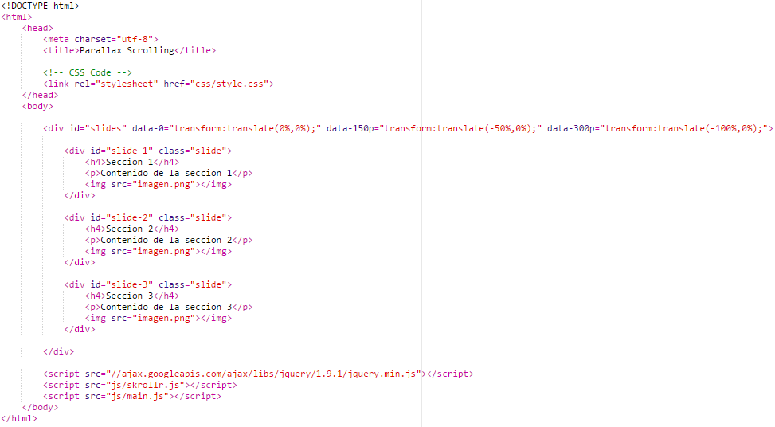

Para llevar a cabo el efecto parallax de forma horizontal hemos usado el plugin Skrollr el cual podemos descargar, además de ver algunos ejemplos de su uso, en el siguiente enlace Skrollr.
Con este plugin conseguimos que el desplazamiento horizontal sea mucho mas sencillo, ademas de permitir un diseño responsivo.
Skrollr es una completa biblioteca de animación de desplazamiento para móviles (Android + iOS) y escritorio escrito simplemente JavaScript. Esta biblioteca javascript le permite animar cualquier propiedad CSS de cualquier elemento en función de la posición de la barra de desplazamiento horizontal.
Debe incluir el archivo skrollr.min.js en la parte inferior del documento (justo antes del cierre del body) y luego llamar a skrollr.init (). O puede colocarlo dentro del head si lo desea, pero asegúrese de llamar a init () una vez que el documento se ha cargado.
Comenzando con la versión 0.5.0 skrollr soporta oficialmente navegadores móviles incluyendo Android e iOS. Además, el soporte móvil se ha reescrito desde cero para skrollr 0.6.0.
La estructura de directorios que debemos generar es la misma que usariamos para cualquier diseño web. Como vemos en la imagen siguiente hemos incluido el fichero main.js (nuestro fichero javascript) y skrollr.js que es el fichero javascript que necesita skrollr para funcionar.
En el documento index.html tendremos un fichero html estructurado de la forma que nosotros queramos, solo debemos tener en cuenta que se deben incluir los ficheros javascript del plugin correctamente e incluir las clases oportunas en los elementos que se vayan a usar para el efecto de movimiento horizontal.
En cada uno de los elementos usados para el efecto parallax horizontal tendremos que añadir los siguientes aspectos:
Dentro de cada uno de los elementos podemos poner el contenido que queramos y para ello se puede emplear el elemento de html que queramos, por ejemplo h1, div1, etc.
El documento html deberia tener una estructura similar a la siguiente, aunque puede ser modificada. Para mas info: Skrollr Documentation
En la hoja de estilos debemos aplicar los estilos que nos indica skrollr para las clases e id que añadimos anteriormente.
Como vemos en la imagen es necesario aplicar la propiedad transform con valor translate para movernos horizontalmente(también puede usarse translateX)
La parte de javascript es bastante sencilla, con skrollr bastará con añadir la línea de código que se expone a continuación para conseguir el efecto deseado.
Nota: Para que todo funcione correctamente no debemos olvidarnos de añadir en el html el fragmento de codigo siguiente: